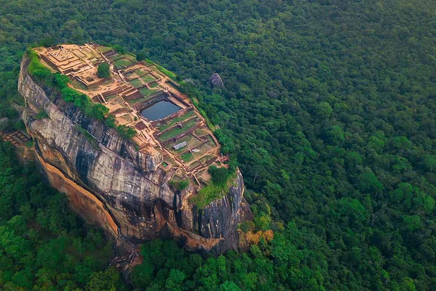
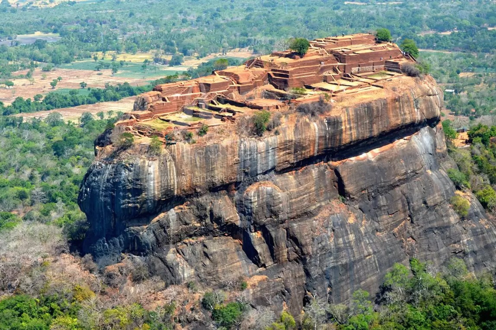
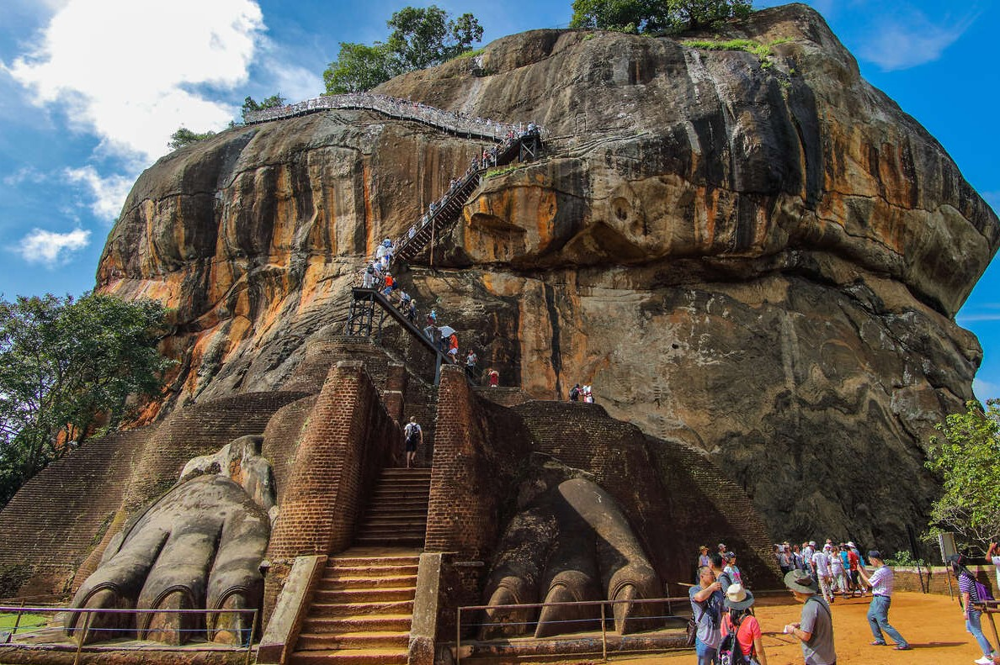
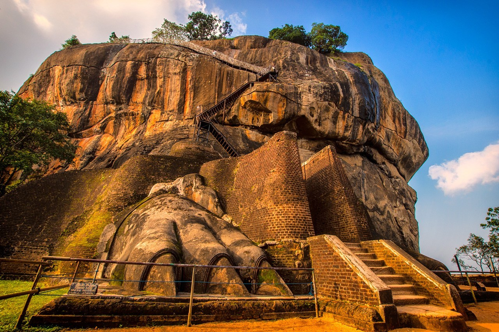
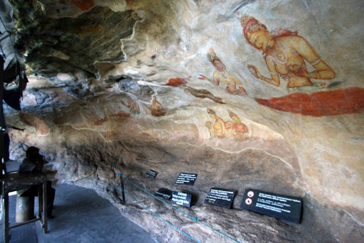

1 / 6

Sigiriya
2 / 6

Top View of Sigiriya
3 / 6

Side View of Sigiriya
4 / 6

Sigiriya Lion's Paw
5 / 6

Sigiriya Lion's Paw
6 / 6

Inside of Sigiriya
Sigiriya is one of the most valuable historical monuments of Sri Lanka.
Referred by locals as the Eighth Wonder of the World this ancient palace and fortress complex has significant archaeological importance and attracts thousands of tourists every year. It is probably the most visited tourist destination of Sri Lanka.
The palace is located in the heart of the island between the towns of Dambulla and Habarane on a massive rocky plateau 370 meters above the sea level. Sigiriya rock plateau, formed from magma of an extinct volcano, is 200 meters higher than the surrounding jungles. Its view astonishes the visitors with the unique harmony between the nature and human imagination. The fortress complex includes remnants of a ruined palace, surrounded by an extensive network of fortifications, vast gardens, ponds, canals, alleys and fountains. The surrounding territories of Sigiriya were inhibited for several thousand years.
Since 3th century BC the rocky plateau of Sigiriya served as a monastery. In the second half of the 5th century king Kasyapa decided to construct a royal residence hereafter his death Sigiriya again became a Buddhist monastery until the 14th century, when it was abandoned. The main entrance is located in the northern side of the rock.
It was designed in the form of a huge stone lion, whose feet have survived up to today but the upper parts of the body were destroyed. Thanks to this lion the palace was named Sigiriya. The term Sigiriya originates from the word Sihagiri, i.e., Lion Rock. The western wall of Sigiriya was almost entirely covered by frescoes, created during the reign of Kasyapa. Eighteen frescoes have survived to this day.
The frescoes are depicting nude females and are considered to be either the portraits of Kasyapa’s wives and concubines or priestess performing religious rituals. Despite the unknown identity of the females depicted in the frescoes, these unique ancient paintings are celebrating female beauty and have incredible historical significance.
One of the most striking features of Sigiriya is its Mirror wall. In the old days it was polished so thoroughly that the king could see his reflection in it. The Mirror wall is painted with inscriptions and poems written by the visitors of Sigiriya. The most ancient inscriptions are dated from the 8th century. These inscriptions are proving that Sigiriya was a tourist destination more than a thousand years ago. Today, painting on the wall is strictly prohibited.
The buildings and gardens of Sigiriya show that the creators of this amazing architectural monument used unique and creative technical skills and technologies. The construction of such a monument on a massive rock approximately 200 meters higher from the surrounding landscape required advanced architectural and engineering skills. The gardens of Sigiriya are among the oldest landscaped gardens in the world. Sigiriya has water gardens, cave and boulder gardens, and also terraced gardens. They are located in the western part of the rock and are with a complex hydraulic system, which consists of canals, locks, lakes, dams, bridges, fountains, as well as surface and underground water pumps. In the rainy season, all channels are filled with water, which begins to circulate through the whole area of Sigiriya. Fountains of Sigiriya built in the V century, perhaps, are the oldest in the world.
The palace and fortress complex is recognized as one of the finest examples of ancient urban planning. Considering the uniqueness of Sigiriya UNESCO declared it a World Heritage site in 1982. Sigiriya is an unmatched combination of urban planning, water engineering, horticulture and arts.
For more reference :
Sigiriya Tourism Website
Ceylon Expediction Website